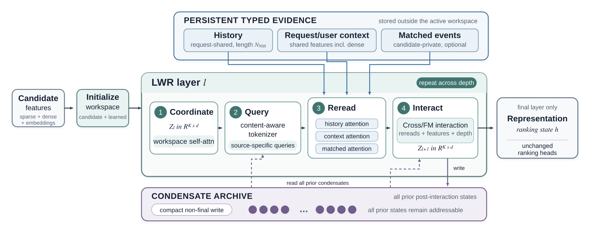
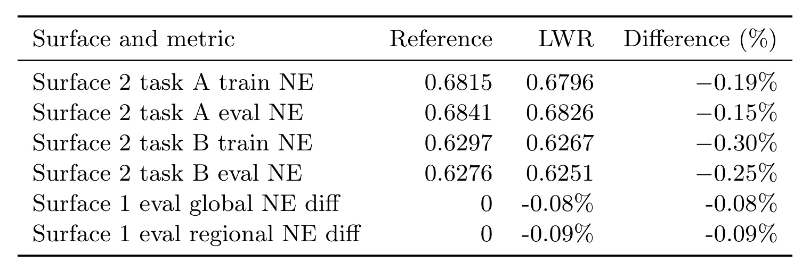
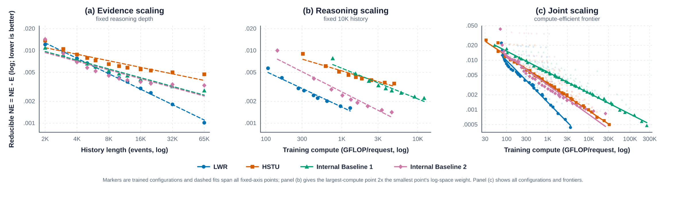

LWR：把长历史证据与候选推理工作区分开
这篇论文的英文标题是 Read More, Reason Deeper: Latent Workspaces for Long-Sequence Recommendation，作者为 Renzhi Wu、Li Sheng、Zikun Cui、Junjie Yang、Tai Guo、Keke Zhai、Yan Li、Jerry Fu、Nipun Mathur、Sri Reddy 和 Hong Li，一作主机构为 Meta MRS，合作团队包括 Facebook Discovery。论文于2026年10月29日UTC首版提交，PDF首页另标10月30日，公开时间以arXiv提交历史为准。唯一论文入口为 arXiv:2610.39188。本轮未核验到独立代码或项目发布入口，不据此宣称开源。
长序列推荐既需要读取更多历史，也需要用更多层解释这些历史；现有序列编码器让所有新增事件穿过每一层，而一次性筛选又使后续层无法找回已经遗漏的证据。论文希望让可访问的证据规模与逐层传播的推理状态分别增长，同时保留后续层重新读取原始历史的能力。
1. 背景和问题
长历史用户建模通常有两种直觉：保留更多事件，可以看到更长时间跨度的兴趣；增加模型深度，可以让候选与历史发生更充分的交互。前者增加的是证据，后者增加的是处理证据的机会。两者并不等价：用户曾经看过一个主题，不能说明模型已经理解该主题与当前候选之间的关系；一个网络堆了更多层，也不能凭空恢复输入前已经过滤掉的事件。LWR把它们分别称为证据扩展与推理扩展，并要求架构给出两个可以独立调节的控制量。论文中的“推理”指排序网络内部反复读取和特征交互，不是让语言模型生成可读思维链，也不是额外调用一个外部Agent完成决策。
序列编码器把历史行为当作层间状态。历史长度从几千变成几万后，新增事件不仅出现在输入层，还会成为后续层更新、注意力与激活存储的一部分。这种设计允许行为之间反复交互，但证据更长会影响整个堆栈，长度和深度的计算预算容易相互挤压。即使采用更高效的注意力内核，也主要是在降低既定算子的执行成本，并不自动改变“把所有事件状态逐层传递”的结构。论文因此没有把问题简单归因于标准注意力实现慢，而是追问哪些状态必须持续被更新，哪些证据只需随时可读。这让它与只替换一个稀疏注意力模块的工作有所区别。
另一端是目标感知池化、行为检索和采样。这些方案可以先根据候选筛出较小的历史集合，再把摘要或子序列交给排序交互，从而限制活动状态规模。它们的代价在于筛选通常发生得早且只有一次：如果当时的候选表示尚不充分，选出的证据可能只反映粗粒度匹配，而后续层即使发现了新的条件，也无法访问已经被丢弃的事件。作者举出的解释是，早期可能关注稳定偏好，后期可能转而强调当前会话；这是一种设计动机，不是论文通过行为标注实验建立的固定层级语义。理解这一点，可以避免把“深层重新查询”直接宣传成已经学会某种人类式分步推理。
LWR所做的区分是保留什么证据与传播什么状态。历史行为、请求及用户上下文、与候选匹配的事件分别放进有类型的持久证据库；候选特征初始化少量工作区槽位，只有这个紧凑工作区沿网络深度更新。每一层都可以根据当前工作区和此前交互的压缩记录，重新构造查询并访问原始证据。这样，早期没有读到的事件并未从可寻址空间消失，后续仍有机会重新分配注意力。它并不保证每次重读都能找到真正有用的事件，只是把一次性决策变成可以继续修正的接口，效果仍须通过长度和深度实验验证。
这种接口也延续了若干已有方向。Set Transformer中的诱导点、Perceiver中的latent与交叉注意力，以及记忆网络中的反复读操作，都提供了紧凑状态访问外部信息的思路。LWR没有声称首次提出这些部件，而是把按源查询、排序特征交互和跨层压缩归档组合到大规模排序中。论文特别区分了SlimPer：后者查询原始用户侧token并迭代精炼紧凑知识库，而LWR明确划分持久有类型证据、候选私有工作区和保存所有此前压缩状态的归档。这个定位使贡献更具体：要验证的是组合是否给长度与深度带来有用的独立扩展，而不是仅用“外部记忆”名称就认定新架构优于所有已有记忆网络。
请求共享与候选私有的区别对推荐系统尤其重要。同一个请求可能需要给多个候选打分，历史和请求上下文不应为每个候选复制一遍；与某个候选匹配的事件及该候选的推理状态，则不能混进其他候选。论文的持久库因此保留来源类型和所有权，工作区从候选特征出发，查询是候选相关的。这里存在一种有意保留的非对称：证据可以共享存储，但候选对证据的关注方式可以不同。它避免把“统一存储”误解成“所有候选共享同一个兴趣摘要”，也避免把每个候选私有化全部用户数据当作理所当然的实现。
对阅读实验的人而言，核心问题不只是单个配置能否在一个NE数值上超过HSTU。作者还要回答：固定深度时，更长历史是否持续有价值；固定历史时，更多层是否仍有合理回报；两者一起变化时，同一总训练预算应如何分配。只给一张长度曲线会把深度设置藏起来，只给一张深度曲线又可能忽略输入已经被截断。论文用三种互补曲线拆开这几个问题，是其值得参考的实验设计。与此同时，独立控制并不意味着独立计算成本：后续层依然要读取更长证据，不能把这种结构解耦写成长度和深度乘积已经消失。
本文直接服务长序列精排和多任务预测。它没有展示语义ID自回归召回，也没有把证据库改成近邻搜索索引；Reread仍是对指定库做注意力读取。它对大模型记忆和RAG的启发主要在于把可访问资料与持续活动状态区分开，而非已经提供可直接移植的语言模型实现。对推荐工程，比较可信的迁移起点是检查当前模型是否在每层携带过多历史状态，或是否在最早的行为筛选处产生不可逆信息损失，再决定是否需要紧凑工作区与多次读取。若业务只需很短历史，后续实验里LWR并非始终领先的事实也应进入选择，而不是仅凭长历史标题改写全部排序链路。
原文保留不变的PLE输出模块，使工作区承担的是排序表示构造，而非重新定义业务标签。由此比较架构时应同时固定末端任务和输入特征：否则增加证据源或更换任务权重也可能改善NE，难以把差异归因于工作区。本文说明了总体接口，但没有逐项公开每个业务面的特征和任务配置，这也是阅读工业结果时需要保留的可比性限制。
2. 方法
2.1 工作区协调与按源查询
对请求和候选，LWR分别组织历史库、请求上下文库和候选匹配事件库。工作区由候选映射的槽位和可学习槽位拼接，随后用工作区内部自注意力进行协调：
符号解释：$r$表示请求，$i$表示候选，$x_{r,i}$是候选上下文，$\phi_{\mathrm{cand}}$把它映射为$n_Q$个候选槽位；$\Theta_M$提供$n_M$个可学习槽位，$K$为工作区总槽位数，$Z_l\in\mathbb R^{K\times d}$是第$l$层输入，$d$为宽度，$\operatorname{Norm}$和$\operatorname{WSA}$分别为归一化与工作区自注意力。可学习槽位在候选间广播，提供与具体内容无关的工作容量，但之后会与候选槽位共同更新，并不要求每个槽位始终具有固定兴趣标签。协调操作在单候选的工作区内部做稠密非因果注意力，传播规模由$K$决定，不随历史事件数直接增加。

Figure 1上方的三个蓝框是持久有类型证据，它们位于活动工作区之外。历史与请求上下文是请求共享的，匹配事件可选且候选私有。左边候选的稀疏、稠密及embedding特征先进入初始化模块，再沿绿色框中的四步推进：协调工作区、构造按源查询、重新读证据、执行排序交互。右边只有最终层输出固定宽度表示，接到保持不变的预测头。下方紫色归档收集非最终层交互后的压缩token，虚线回到Query和Interact，表示后续层能直接读取所有此前归档，而不是只拿最后一个摘要。读图时必须区分蓝色证据通路与紫色深度通路：前者保存原始可访问内容，后者保存模型此前如何结合内容和候选进行交互的结果。两者都能帮助下一层，但压缩状态不是又一份原始历史，不能在实现时把它们混成同一库。图中的“重复跨深度”也没有让证据库本身经过每层变换，只是让每层查询它；这种读接口正是长度不会膨胀工作区的原因，同时也是长历史仍会消耗重复读成本的原因。Query模块把协调后的工作区、此前归档和本层先验token联合转换为查询，再按证据类型拆分：
符号解释：$T_l$是第$l$层tokenizer，$C_{<l}$是所有此前完成层的压缩归档，$P_l$为本层可学习先验token，$\mathcal S=\{\mathrm{hist},\mathrm{ctx},\mathrm{sim}\}$表示三类证据源；$U_l^s\in\mathbb R^{r_s\times d}$给第$s$类库分配$r_s$个查询。每个源的查询数量被限制，工作区状态改变后查询也随之改变，因此后层可以根据之前读到的信息提出新的候选相关请求。作者保留静态token混合分支，并增加内容相关分支，其输出投影以零初始化，使初始函数保持而自适应路径从训练开始接收梯度。原文没有公开这一tokenizer的完整实现细节，不能仅凭示意图补造注意力头数、激活函数或精确门控公式。
2.2 反复读取与显式排序交互
每类查询分别以相应证据库作为键和值进行交叉注意力：
符号解释：$S^s$是第$s$类持久证据，$\operatorname{Attn}$为多头交叉注意力，$R_l^s$是该源返回的固定数量响应。查询来自候选工作区，而键值来自保留的证据；历史变长会增加键值长度，但不会增加响应槽位数。请求侧历史与上下文使用packed表示和分组offset，让多个候选读取同一请求的数据而不复制；候选offset则确保匹配事件不会跨候选串读。这里的共享是内存和数据组织层面的约束，不代表一个候选的注意力结果可以直接替另一个候选使用。每层重新读取是为了让关注方式随候选状态演化，原文没有把它变成硬选择的检索步骤，也没有说每层只访问少数实际历史位置。读出的证据还要与排序特征发生显式交互，才更新下一层的工作区：
符号解释：$F_l$是面向排序的Cross/FM交互块，输入包括协调工作区、各类读取响应、此前所有压缩状态，以及候选相关的稠密交互投影$f_{r,i}$；输出仍为$K\times d$工作区。证据读取与排序特征交叉被放在两个清楚的步骤中，避免把“注意力已经读过历史”当作“已经完成候选价值建模”。FM和deep-cross一类结构帮助显式处理特征组合，但论文仅说明其设计谱系和接口，并未给出可以完整复刻生产模块的层级定义。最终层产出固定宽度表示，送入原有PLE多任务模块及任务头，整体比较因此不依赖更换末端任务结构。
训练与推理使用同样的读—交互链路，原文没有引入训练时专用教师或推理时外部工具。归档由当前层计算出来，不是未来样本标签或测试数据注入。监督来自工业排序任务及原有预测头，作者没有列出新的辅助重建损失，也没有声称用可读推理步骤监督工作区。复现者需要保留这些界限：可以从已有多任务loss端到端反向传播，但不能把想象中的“每层兴趣正确性标签”补成论文的训练机制。工作区是否形成稳定的分工，仍应通过消融和干预另行验证，不能从模块命名直接得出解释性结论。
2.3 跨层压缩归档及复杂度
非最终层把交互后的工作区压缩成少量condensate token，并追加到全历史归档：
符号解释：$\kappa_l$把$K\times d$状态压缩为$q_c\times d$，$c_l$是本层压缩结果，$D$为总层数。第$l$层可见归档$C_{<l}\in\mathbb R^{lq_c\times d}$，因此后续不仅依赖紧邻前层，还可以直接查阅早期完成的交互。归档内容是候选、已读证据和特征交叉的结果，而不是原始历史的无损编码。原文把这种沿网络深度压缩状态的做法，与沿时间片段压缩长序列的方案区分开；二者的轴不同，不能把每层写入理解成又截取了一段用户行为。
符号解释：$N_s=|S^s|$为该证据库长度，$r_s$为查询数量，$d$为表示宽度；前式是单层、单源注意力读的主要量级，后式是工作区和跨层归档的候选私有存储。证据变长时，活动工作区不增大，但每层读仍随$N_s$线性增加，跨$D$层还会重复；深度增加时，每层工作区槽位不变，但归档总量随$Dq_c$增长，并非整个候选私有状态都严格恒定。论文所谓解耦更准确地指两个扩展方向不会把对方控制的主要表示规模同时放大，而不是消灭长度与深度的乘积成本。归档进入Query和Interact后还有自身处理成本，简式不能替代端到端profile。
这种结构为预算搜索提供了清晰参数：证据长度决定能访问多少内容，层数决定反复读和交互多少次，槽位与每源查询数决定每层的压缩瓶颈，归档token数决定保留多少跨层信息。作者主配置固定这些小量，再扫描历史长度和深度，以免把更多workspace槽位混进证据扩展的结论。原文没有逐项删除归档、类型库或自适应查询的组件消融表，因此本轮只能解释设计如何连接和整体结构如何表现，不能宣称某个单一模块已经被独立证明是全部收益来源。
3. 实验结果
3.1 业务面与指标口径
实验使用两个十亿规模排序业务面。每个模型以连续三天线上数据训练，样本量随业务面为三百亿至五百亿，随后一天评估；训练使用一百二十八张NVIDIA H100、混合精度和内部平台定制的内存与吞吐内核。这些是生产来源数据上的离线训练评估，不是论文提供了随机化线上流量实验，更不是直接报告点击率或收入提升。按时间先后切分可以减少随机混合带来的某些时序问题，但原文没有详细公开数据去重、标签窗口和所有任务定义，不能从这一描述推出全部数据泄漏风险已排除。内部数据也限制了外部复现，单纯复刻三个模块名称并不能恢复同样的数据分布。
整体对比采用三千长度历史。LWR用五层、七十六个工作区槽位、每种证据二十四个查询，非最终层各写四个condensate，最终的2048维表示送入保持不变的PLE模块。Surface 2以HSTU为参考，Surface 1使用一个既有内部基线。两者都属于实际排序系统，但任务含义、参考模型和指标约定不完全相同，原文明确不合并。特别是内部基线没有充分架构细节，读者无法验证它与自己的传统长序列系统是否相当，不能把“超过现有基线”直接解释成已超过所有公开最强方法。
符号解释：$H(y)$是经验标签熵，NE为二分类log loss经过该熵归一化后的数值，越低越好；$\Delta_{\mathrm{NE}}$是作者报告NE改善的约定。式中没有再除以基线NE，因此论文写的百分号不能自动按通常“相对降低百分之多少”计算。以评估任务A为例，零点六八四一减零点六八二六得到零点零零一五，再乘一百得到零点一五；若除以零点六八四一会得到另一种口径。Surface 1又报告关键任务p-diff，不能把这两种差值与线上CTR百分点混为一谈。作者称超过零点零三的改善在业务面的统计协议下显著，但没有给出完整置信区间或检验细节，本轮保留为作者报告而非自行证明。

Table 1前四行是Surface 2两个任务的训练与评估NE。任务A训练从零点六八一五降到零点六七九六，评估从零点六八四一到零点六八二六；任务B训练从零点六二九七到零点六二六七，评估从零点六二七六到零点六二五一。对应报告差值为负零点一九、负零点一五、负零点三零和负零点二五，方向都支持更低的归一化损失。训练与评估各自都改善，提供了收益未只停留于训练拟合的证据，但一天评估不能代替长期分布漂移测试。末两行来自Surface 1的全局与区域关键任务差值，分别是负零点零八和负零点零九，参考列的零表示相对既有模型的差值基准，不表示该业务真实NE为零。不能把这两行与前面原始NE求平均，也不能将零点三零的训练改善当作线上收入增幅。表格说明两个业务面均有正向变化，却没有逐组件消融、用户分群效果和置信区间；它支持整体结构在这些设置下有效，无法单独判断Query、Archive或Cross/FM各自贡献多大。
表格里的任务A和任务B不能因为原始NE一高一低就被排列为业务难度高低，它们的标签熵和预测目标未充分披露。可核对的是每一行内部的参考与LWR，跨行平均会引入额外假设。按通常相对误差计算，任务A评估的零点零零一五除以零点六八四一约为百分之零点二一九，这与论文约定的零点一五不同；二者都可以从原始数值算出，但必须写明公式。本文沿用作者差值，保留原始NE以方便复算。Surface 1没有给出同样的原始值，无法进行对应的相对计算，更不能从参考列的零反推出其预测已经没有误差。主表没有报告分群方差，少数人群是否回退也仍未知，整体正向不应被写成全体用户一致受益。
3.2 长度、深度与联合计算前沿
作者对四类架构扫描历史和深度。证据扩展在基础深度下测试十二种历史长度，范围约两千到六万五千；推理扩展固定一万零二百四十个事件，测试九个深度；联合比较每个架构一百一十七种组合，总计四百六十八个训练配置。十二乘九等于一百零八，论文另报一百一十七个组合，但正文没有解释额外九个配置的网格构成，本轮不自行补出不存在的实验设置。整体业务面表与这一扩展网格也应区别：表格是三千历史的总体任务比较，而三千、五千、一万的前向成本摘要是扩展实验中的切片，不能因历史长度相同便默认所有任务与训练配置完全相同。

Figure 2包含原始的三个关联子图，左图固定推理深度并改变历史，横轴是历史事件数；中图固定一万历史，横轴改成训练计算；右图同时允许长度和深度变化，只保留计算与质量均不被其他配置支配的前沿。纵轴都是可约减NE，也就是NE减一个拟合下界，越低越好，坐标均采用对数刻度。左、中两图共享零点六七八九的下界，所以减去同一个常数仍保留原始NE排序；右图为每种架构分别拟合下界，垂直位置不再是原始NE优劣的直接排序。图中实心标记对应训练出的配置，虚线是拟合，右图较淡点还展示全部网格。图下细字说明中图给最大计算点双倍的对数空间拟合权重，这属于拟合选择，而不是新增了一次独立实验。阅读时应优先看实际点和正文比较，再解释斜率，不要把平滑曲线当成已经覆盖所有中间预算的测量，也不能把三个面板上的纵轴数值直接跨图做倍数比较。
固定深度的证据曲线显示LWR的优势随历史延长才更明显。在三千、五千、一万历史处，相对HSTU的NE报告改善为零点一一、零点一二、零点一九，对应每请求前向GFLOP减少百分之十九点六、四十八点二、六十九点六。一万历史的LWR前向成本为五十二点六九GFLOP，而Internal Baseline 2要一百三十六点二八；后者NE好零点零一，低于作者给定显著阈值。这个比较不是LWR在质量上绝对赢了所有模型，而是几乎不可区分的质量下成本明显不同。图左端LWR还落后于Internal Baseline 1，从一万二千历史开始才领先四个架构家族，因此本文最直接支持的是长历史区间的优势，不能宣称所有序列长度都应替换为工作区架构。
固定历史的深度曲线改变的是相对深度，从基础的零点五倍到八倍，用实测前向加反向总训练计算作为横轴，而不是仅比较层数。四种架构都随更深计算单调改善，LWR在这个扫描中NE报告改善零点四一；这说明原始证据保持可读时，增加交互机会还有价值，但它并未证明每一层都学到新的可解释推理步骤。在八倍深度处，LWR优于HSTU和Internal Baseline 1，Internal Baseline 2仍好零点零二，低于显著阈值，却消耗约三点五倍训练计算。这里的“训练计算”与前一段仅前向的每请求成本不同，也与线上响应时间不同。不能把三点五倍训练GFLOP直接写成线上推理加速三点五倍。
3.3 前沿拟合意味着什么
联合前沿不要求长度与深度同时增加。对于一个预算，可以用较浅网络读更长历史，也可以用较短历史增加层数；若一个配置质量不更好且计算不少于另一个配置，它会被前沿剔除。这样比较的是各架构如何把预算投给两类容量，而不是预设所有架构必须沿同一条长度—深度路径增长。该定义可以避免一类偏差：若只选相同名义深度和历史长度，架构的实际计算成本可能不同；若只让两者同步增长，又可能错过对某个架构更划算的组合。但前沿仍依赖已扫描配置，未搜索的更优点可能改变拟合结果。
符号解释：$m$是架构家族，$C$为训练计算，$E_m$是每个架构单独拟合的误差下界，$A_m$控制尺度，$\alpha_m$表示在该网格前沿上可约减误差随计算下降的拟合速度。LWR的指数为零点八四五，HSTU为零点五五八，两个内部基线分别零点四二四和零点五九九。更大指数支持LWR在已测计算范围与拟合模型下把额外训练计算转成质量的速度更快，不保证在无限预算、其他业务或其他数据分布仍保持该斜率。因为下界分别拟合，右图某条线更低不意味着它的原始NE总是更低；如果下界估计发生变化，可约减误差和指数也可能改变，原文没有报告这些参数的不确定性。
对工程读者，最有用的不是直接套用零点八四五，而是学习三个实验切面如何相互约束。长度曲线确认额外证据是否有用，深度曲线确认同样证据是否还有可挖掘空间，联合前沿再检验在实际预算下哪种组合划算。如果只看最后的前沿指数，可能遗漏短历史回退，也可能忽略Internal Baseline 2在少数点更低的原始NE。若复现类似实验，应同时公布原始NE、拟合后NE、训练计算、前向计算和推理时延，才能知道改善来自架构、配置搜索还是统计处理。本轮未独立重跑该网格，所有数值为原文报告。
原文没有线上随机对照指标、模块删除消融、端到端服务吞吐或不同候选数下的延迟表。三百亿至五百亿训练样本和两业务面提高了工业关联度，却不能替代这些缺失证据。比如归档是否必要、类型分库是否主要贡献、固定查询数是否最优，都不能从整体三曲线单独识别；同样，前向GFLOP减少可能被实际内存访问、packed读取或调度开销部分抵消。论文提供的是有价值的架构与扩展证据，不是完整服务部署验收。对候选很多、历史库很大或尾延迟严格的场景，仍应测量真实请求生命周期，而非按GFLOP比例承诺加速。
4. 总结
我认为LWR最有价值的改变，是让原始证据持续可寻址，候选工作区持续可更新。它没有强迫长历史在每层都变成庞大的活动序列，也没有把一次筛选的结果永久封闭成后续层唯一可见的信息。持久库、固定槽位、多次读和深度归档组合出两个可以独立调节的扩展方向；三组实验则检验这种可调节性是否真能转成质量与计算收益。对长历史排序，这比只问“是否换一个更大Transformer”提供了更具体的设计空间。
对推荐系统的迁移，应先定位自己在哪里损失了信息。如果前置行为筛选遗漏的证据会在后续候选交互中变得重要，那么保留原始库并允许重读值得测试；如果历史已经很短，或者瓶颈在候选数乘以重复读开销，LWR不一定是合适选择。工作区和归档还要求正确维护请求共享、候选私有的所有权，不能为了复用缓存让不同候选或请求相互串读。对RAG和个性化记忆，可以借用“资料库—活动状态—压缩决策记录”的分工，但论文没有语言生成实验，这只是结构启发，需要重新定义监督、读取接口和评测。
局限至少有五处。第一，内部数据、内核和参考模型没有充分公开，外部复现不能只靠九页正文。第二，论文没有逐模块消融，整体收益无法拆成归档、类型库和自适应查询的独立贡献。第三，NE是离线归一化损失，尚无线上CTR、收入或长期用户指标证据。第四，长度与深度只在状态组织上解耦，重复读取及归档增长仍有真实成本，GFLOP节约不等于服务尾延迟同比下降。第五，前沿下界和指数依赖拟合与网格范围，缺乏不确定性分析，不能把斜率外推成普遍规律。短历史不全面领先也意味着改造需要结合业务的历史分布，而不是平均长度一个数字。
后续我会按三个步骤验证。先在自有时间切分数据上复刻固定深度的长度扫描，保留短历史段，检查是否也出现从某个长度开始更有优势的转折；这个步骤能判断收益是否来自长期证据，而非换了特征或训练预算。再固定历史长度，删除或限制归档、减少读取次数、替换按源查询，记录原始NE和训练计算，帮助识别哪些连接确实有贡献；这类消融是本篇仍缺的因果证据。最后把候选数量、查询数、工作区槽位和归档大小加入真实服务profile，同时测内存峰值、吞吐与尾延迟，才能决定质量收益能否在生产预算内兑现。
阅读后最应保留的边界是，工作区固定并不代表全部状态固定，反复读并不等于免费读，NE差也不等于业务提升。论文支持在其两个排序业务面与扫描范围内，紧凑候选工作区可以更有效地利用长历史和深层交互；超出这个范围的部署承诺仍要重新建立证据。若未来代码或更完整实验公开，优先核对tokenizer、Cross/FM、压缩器和packed offset的精确定义，再讨论拟合指数或工业收益能否重现。
对于候选私有的归档，还应单独监测压缩后是否丢失早期交互信息：存储量较小不保证压缩没有代价，能够访问全部旧condensate也不保证模型实际使用。可以在固定原始证据和末端预测头的条件下，打乱或截断不同层归档，观察NE变化，再决定保留多少层记录；这属于后续验证建议，原文没有提供相应结果。